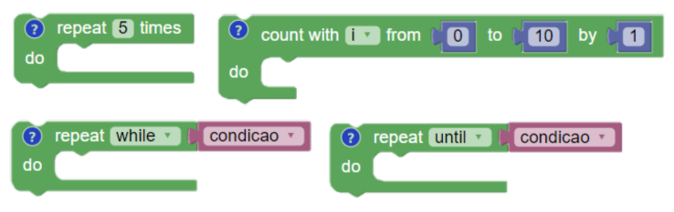
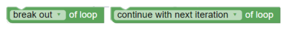

Prof. André Campos
Prof. Júlio de Melo
É possível desenhar a figura abaixo sem tirar a "caneta do papel" desenhando cada linha uma única vez?
Ainda é possível fazer o mesmo com a figura abaixo?
...e com a figura abaixo?
Existe um padrão?
É possível
Não é possível
Vértices com número ímpar de arestas > 2
Se um padrão funciona para problemas pequenos, é possível que também funcione em...
Problemas maiores podem ser reduzidos...
Procedimento estruturado para colocar uma ideia de solução em prática
cima
padrão (2x)
baixo (2x)
esquerda (2x)
cima
padrão (2x)
Diferentes formas para repetir instruções
Cada uma é adequada a uma situação (apesar da similaridade)

Sempre possuem uma condição de parada
É de responsabilidade do programador garantir que haverá parada
Atenção ao término do programa
As condições de parada dos laços são testadas apenas no início das iterações
Podemos, entretanto, voltar ao ínício ou sair do laço no meio do bloco de comandos. 
São normalmente usados dentro de condicionais.
Funções
Como funções matemáticas $$f(x) \Rightarrow 2^x$$ $$g(x) \Rightarrow 3f(x) + 4x$$
Não recebem dados (parâmetros), nem retornam dados (retornos)
Dados armazenados em variáveis usadas na função
Realizam cálculos e retornam novos dados
Realizam procedimentos e retornam dados
Atenção ao término do programa